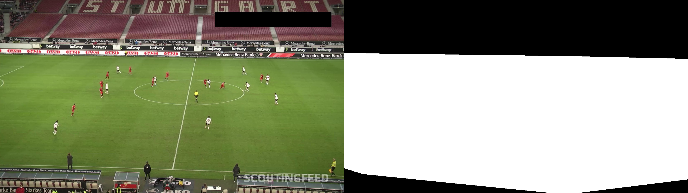
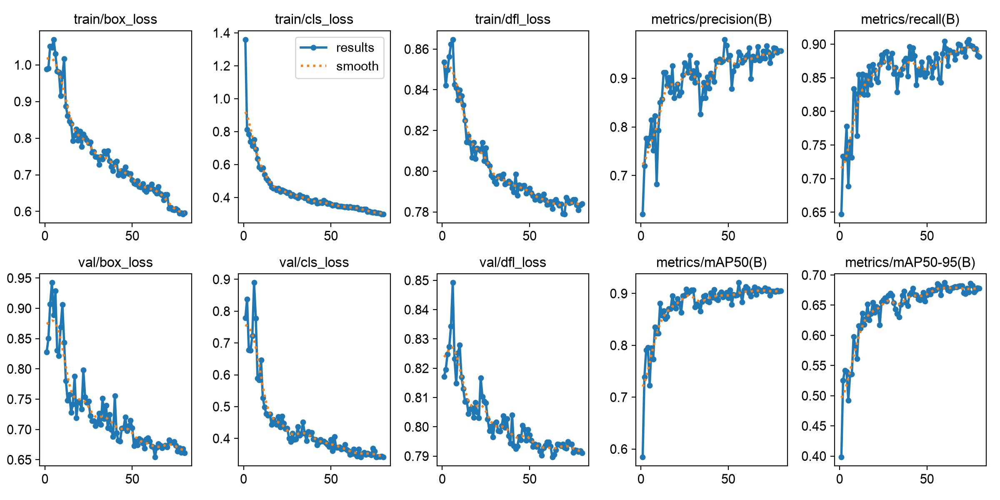
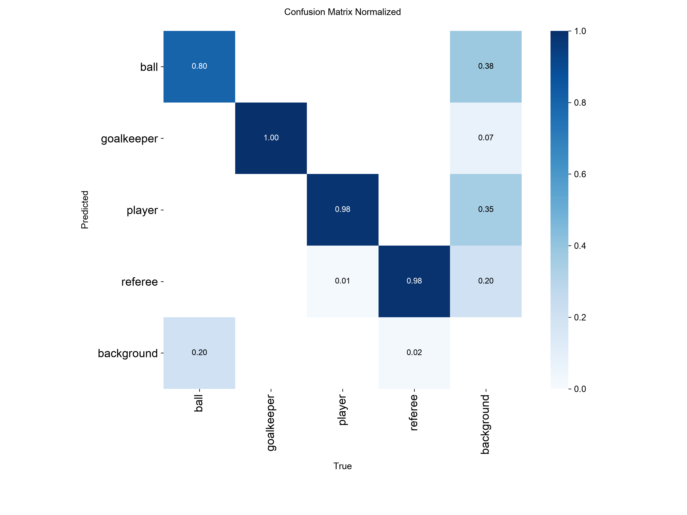
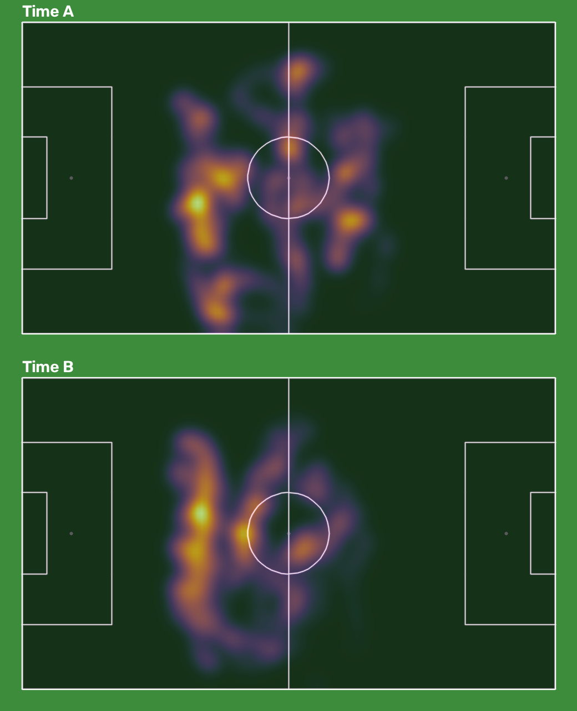

Pipeline
| etapa | técnica | conteúdo da disciplina |
|---|---|---|
| Máscara do gramado | HSV, limiar, abertura e fechamento, maior contorno, casco convexo | canais de cor, limiar, morfologia |
| Detecção | YOLO11m: genérico do COCO (nível 1) ou treinado para futebol (nível 2) | CNN, detecção, IoU, NMS, mAP |
| Tracking | ByteTrack: associação de caixas entre frames | tracking por detecção |
| Times | cor do tronco em Lab sem a grama, K-means com 5 grupos, voto da maioria por ID | espaços de cor, clustering |
| Vista de cima | 32 pontos do campo (YOLO-pose) e homografia com RANSAC | geometria, homografia |
| Métricas | trajetória suavizada (mediana móvel): distância, velocidade, calor, posse | — |
Nível 1: modelo genérico e visão clássica
O YOLO pré-treinado no COCO sabe o que é pessoa, não jogador: detecta torcida, banco e gandulas. Uma máscara clássica do gramado (verde em HSV, limpa com morfologia) descarta quem está fora do campo.

O que deu errado e virou aprendizado
- K-means com 2 grupos falhou com o árbitro. O grupo "vermelho" absorvia árbitro, bandeirinhas e o pessoal de roupa escura do banco (cerca de 35% de contaminação). Com 5 grupos, árbitros e banco ganham grupos próprios; os dois maiores grupos claramente diferentes viram os times e os demais só entram num time se tiverem a mesma cor (a mesma camisa na sombra).
- Brilho pesa, mas menos. No espaço Lab, o canal L (sol e sombra) dominava a distância: um árbitro amarelo com o mesmo brilho de um jogador vermelho ficava "perto" dele. Com peso 0,5 em L, o K-means passou a separar vermelho, branco, roupa escura e amarelo.
- Um segundo jogo mostrou o limite da regra. No jogo
573e61(branco × grená) os times diferem quase só no brilho, e a regra antiga, que exigia diferença de cor, não separava os times. A decisão passou a usar a distância completa no espaço do K-means, e o número de grupos foi de 4 para 5. - Voto da maioria por ID: um frame com sombra não troca o time de um jogador.
Nível 2: detector treinado para futebol
YOLO11m ajustado (fine-tuning) em 372 frames da Bundesliga com as classes bola, goleiro, jogador e árbitro
(dataset Roboflow football-players-detection, CC BY 4.0). Treino em 1280 px, porque a bola tem cerca de 11 px de largura
em 1920 px. O split original era por foto; aqui foi refeito por jogo, com GroupShuffleSplit:
| parte | imagens | jogos | códigos dos jogos |
|---|---|---|---|
| treino | 254 | 10 | 121364, 2e57b9, 40cd38, 42ba34, 4b770a, 538438, 54745b, 55c9d1, 744b27, cd987c |
| validação | 28 | 2 | a9f16c, c01561 |
| teste | 90 | 3 | 08fd33, 573e61, 798b45 |
Detecção no teste (3 jogos inéditos)
Classes unificadas em pessoa e bola, porque o COCO não conhece goleiro nem árbitro.
| detector | mAP50 pessoa | mAP50 bola | mAP50-95 pessoa | mAP50-95 bola | recall pessoa@0.3 | recall bola@0.3 |
|---|---|---|---|---|---|---|
| COCO genérico | 0.873 | 0.432 | 0.716 | 0.218 | 92% | 22% |
| COCO + máscara do gramado (nível 1) | 0.883 | 0.458 | 0.723 | 0.23 | 92% | 22% |
| fine-tuned (nível 2) | 0.989 | 0.711 | 0.841 | 0.401 | 99% | 72% |
A máscara clássica ajuda um pouco o modelo genérico, mas não substitui o aprendizado. O maior ganho está na bola, o objeto mais difícil.
No vídeo inédito: nível 1 (esquerda) × nível 2 (direita)
| indicador | nível 1 | nível 2 |
|---|---|---|
| IDs de pessoa | 46 | 36 |
| duração mediana de um ID (s) | 12.8 | 29.8 |
| bola vista (% dos frames) | 50.5 | 76.5 |
| pessoas por frame (mediana) | 23 | 23 |
Com o modelo treinado, a maioria dos jogadores mantém o mesmo ID durante os 30 s. Banco e treinadores deixam de ser rastreados sem máscara nenhuma, e árbitro e goleiro passam a vir do próprio detector, não de uma regra de cor.


Experimento: o split por foto infla o resultado?
Hipótese: com frames do mesmo jogo no treino e no teste, a métrica sai otimista. Para testar, um segundo modelo foi treinado num split aleatório por foto, usando só os jogos de treino e validação, e avaliado em dois testes:
| modelo treinado no split por foto, avaliado em | mAP50 bola | recall bola@0.3 | mAP50 pessoa |
|---|---|---|---|
| teste com vazamento (frames de jogos já vistos) | 0.599 | 56% | 0.99 |
| teste honesto (3 jogos inéditos) | 0.701 | 73% | 0.989 |
Mapa tático: homografia, radar e métricas
Um modelo YOLO-pose detecta 32 pontos do campo (cantos, áreas, círculo central). Com as posições oficiais desses pontos em metros, o RANSAC estima a homografia imagem → campo a cada frame, e os pés de cada jogador são projetados no gramado. O jogo do vídeo foi removido do dataset de pontos do campo (13 imagens) para continuar inédito.
Linhas rosa: o campo oficial reprojetado no vídeo. Quando elas casam com as linhas reais, a homografia está certa.
Qualidade da homografia (28 imagens de teste)
| homografia | erro mediano (m) | p90 (m) | máximo (m) |
|---|---|---|---|
| piso: ajustada nos próprios rótulos | 0.91 | 1.01 | — |
| sistema, RANSAC 1 m | 4.05 | 8.15 | 4243 |
| sistema, RANSAC 3 m (adotado) | 3.38 | 5.8 | 6.5 |
| modelo em 1280 px, RANSAC 3 m (sem homografia em 2 de 28 imagens) | 4.61 | 7.45 | 9.8 |
Com limiar de 1 m, o RANSAC descartava metade dos pontos bons. Num caso, sobraram pontos quase alinhados e a homografia degenerou, com erro de quilômetros. Com 3 m, não há mais catástrofes. O gargalo restante é a precisão dos pontos detectados, cerca de 25 px por ponto com o modelo em 640 px.

Jogadores (IDs com 5 s ou mais em cena)
| ID | time | tempo em cena (s) | distância (m) | vel. média (km/h) | vel. máx. 1 s (km/h) |
|---|---|---|---|---|---|
| 7 | B | 29.9 | 84.8 | 10.2 | 22.8 |
| 18 | B | 30 | 79.7 | 9.6 | 18.2 |
| 17 | B | 29.9 | 78.1 | 9.4 | 21.6 |
| 9 | A | 30 | 77.2 | 9.3 | 19.7 |
| 19 | B | 29.8 | 76.2 | 9.2 | 17.5 |
| 2 | A | 30 | 75.9 | 9.1 | 19 |
| 14 | B | 29.8 | 75.5 | 9.1 | 18 |
| 12 | B | 30 | 75.2 | 9 | 19.8 |
| 15 | B | 30 | 74.8 | 9 | 21.1 |
| 1 | B | 30 | 74.1 | 8.9 | 15.9 |
| 16 | A | 30 | 69.4 | 8.3 | 19.7 |
| 11 | B | 30 | 68.1 | 8.2 | 17.5 |
| 8 | A | 30 | 63.4 | 7.6 | 21.1 |
| 6 | A | 30 | 62.9 | 7.6 | 17.5 |
| 3 | A | 30 | 60.3 | 7.2 | 18.6 |
| 5 | A | 30 | 59 | 7.1 | 18.9 |
| 4 | A | 30 | 58.7 | 7.1 | 19 |
| 22 | A | 27.4 | 56.2 | 7.4 | 15.7 |
| 13 | A | 30 | 55.2 | 6.6 | 16.2 |
| 10 | B | 11.9 | 27.4 | 8.3 | 16.3 |
| 23 | B | 7.5 | 16.2 | 7.7 | 14 |
| 25 | goleiro | 7.1 | 11.4 | 5.8 | 14.4 |
| 26 | goleiro | 5.9 | 9.6 | 5.8 | 9.6 |
Velocidade média de 7 a 10 km/h e máxima (média de 1 s) de 15 a 23 km/h: faixa realista para futebol profissional. A posse quase total do time branco confere com o vídeo, em que ele troca passes o trecho inteiro.
Limitações e próximos passos
- A homografia erra cerca de 3.4 m (o piso é 0.9 m). Isso basta para o mapa tático, mas soma ruído à distância percorrida. Treinar em 1280 px piorou o resultado; próximos passos possíveis são mais dados de pontos do campo ou um modelo de segmentação das linhas.
- A bola no ar é projetada no chão, porque a homografia só vale para o plano do gramado.
- Todos os dados vêm de uma liga e de um estilo de transmissão. Um teste mais forte seria outra liga, outra câmera ou um jogo noturno.
- A separação de times por cor depende de uniformes contrastantes. Uma alternativa a comparar são embeddings visuais (CLIP/SigLIP) com clustering.